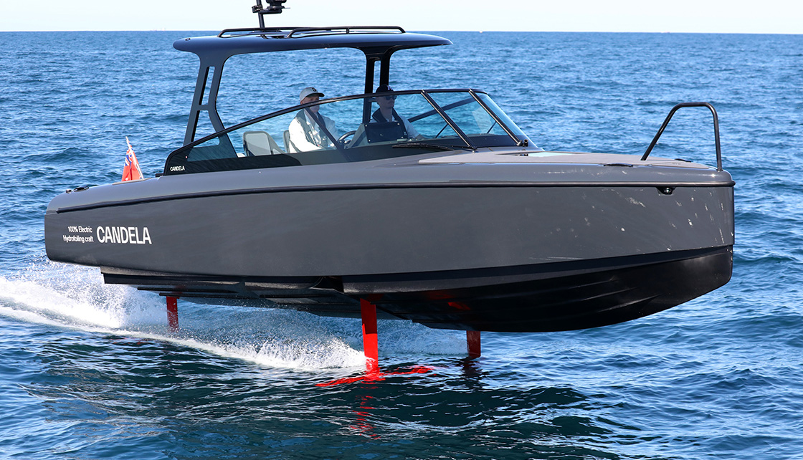
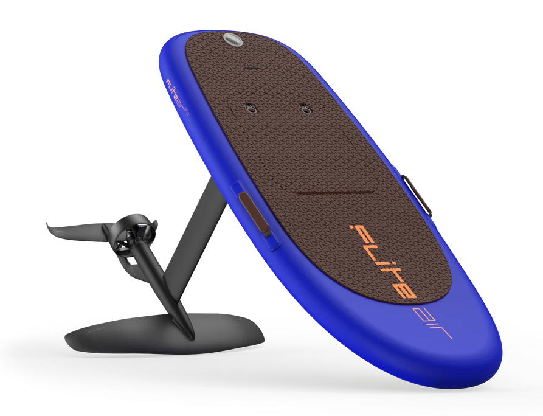

Candela C-8
Электрический катер на подводных крыльях длиной 8,5 метров, первое в мире серийное судно такого класса. Форма
корпуса напоминает спортивный автомобиль, перенесённый на воду.
Производство катера началось в 2022 году на верфи Candela в Стокгольме. Ежедневно на сборке одного судна работает
небольшая команда инженеров. На создание одной лодки уходит около 300 часов ручного труда. Корпус выполнен из
углеродного волокна, что обеспечивает малый вес при высокой прочности.
Специально для Candela C-8 была разработана система гидрокрыльев с компьютерным управлением. Крылья выводят
корпус над водой на скорости около 16 узлов, устраняя сопротивление воды. Датчики и гироскопы корректируют положение
крыльев 100 раз в секунду, обеспечивая стабильность даже при волнении.
В отличие от обычных электрических катеров, Candela C-8 потребляет на 80% меньше энергии благодаря отсутствию
гидродинамического сопротивления. Литий-ионная батарея ёмкостью 85 кВт*ч обеспечивает запас хода до 50 морских миль
(около 90 км) при крейсерской скорости 22 узла (~40 км/ч). Полная зарядка занимает около 2 часов.
Катер движется практически бесшумно и не создаёт волн, что делает его пригодным для использования в заповедных
акваториях. Максимальная скорость достигает 30 узлов, а разгон до глиссирования на крыльях занимает менее 4 секунд.

Fliteboard Air Pro
Электрический фойлборд с надувной доской длиной 142 см, одна из самых компактных и лёгких моделей в линейке
Fliteboard. Форма доски напоминает уменьшенный серфборд, оснащённый подводным крылом-фойлом.
Производство началось в 2019 году на предприятии Fliteboard в Байрон-Бей. Компания была основана бывшим инженером
Airbus Дэвидом Тредделлом. На создание одной доски уходит несколько десятков часов. Корпус выполнен из надувного
ПВХ-материала военного класса с армированными волокнами, что обеспечивает малый вес при высокой жёсткости.
Специально для Fliteboard была разработана модульная система подводных крыльев из углеродного волокна. Крыло выносит
райдера над водой на скорости около 15 км/ч, полностью устраняя сопротивление воды. Электронная система стабилизации
корректирует положение крыла сотни раз в секунду, обеспечивая плавность хода даже на неровной воде.
В отличие от обычных электросёрфов, Fliteboard Air Pro потребляет значительно меньше энергии благодаря отсутствию
гидродинамического сопротивления. Литий-ионная батарея Flite Akku ёмкостью 2 кВт·ч обеспечивает запас хода до 2
часов при крейсерской скорости. Полная зарядка занимает около 2,5 часа.
Фойлборд движется практически бесшумно и не создаёт волн, что делает его пригодным для использования в закрытых
акваториях и озёрах. Максимальная скорость достигает 50 км/ч, а вес всей конструкции в сборе составляет около 15 кг
— доску легко перевозить в рюкзаке.
Arcimoto FUV
Трёхколёсный электромобиль для города, у которого два сиденья расположены друг за другом. Название расшифровывается
как Fast Utility Vehicle. Компактный кузов и малая ширина позволяют легко парковаться и маневрировать в плотном
потоке.
Производство развернули в американском городе Юджин, штат Орегон, первые серийные машины были выпущены в 2019 году.
Компанию Arcimoto основал Марк Фроманн. Главная идея проекта: сделать электротранспорт дешёвым, лёгким и простым в
обслуживании.
Лёгкая трёхколёсная конструкция потребляет меньше энергии, чем обычный автомобиль. Литий-ионная батарея ёмкостью
около 20 кВт·ч обеспечивает запас хода порядка 160 км в городском цикле. Максимальная скорость составляет около 120
км/ч.
Управление построено на руле, как у автомобиля, но по манёвренности машина ближе к мотоциклу. Электромотор работает
практически бесшумно и не даёт выхлопа, поэтому FUV подходит для коротких городских поездок и доставки.
Xiaomi Electric Scooter 6
Складной электросамокат для ежедневных поездок по городу. Конструкция рассчитана на то, чтобы его можно было быстро
сложить и занести в транспорт, в офис или в багажник.
Рама сделана из лёгкого алюминиевого сплава, что даёт малый вес при достаточной прочности. Самокат оснащён передней
фарой и задним стоп-сигналом, а на руле расположен небольшой дисплей, показывающий скорость и уровень
заряда.
Электромотор встроен прямо в колесо, поэтому в конструкции нет цепей и ремней, а обслуживание сводится к проверке
шин и тормозов. Энергия рекуперации при торможении частично возвращается в батарею и увеличивает запас хода.
Самокат движется практически бесшумно и не даёт выбросов, что делает его удобной заменой автомобилю на коротких
расстояниях. Заряжается от обычной розетки за несколько часов.